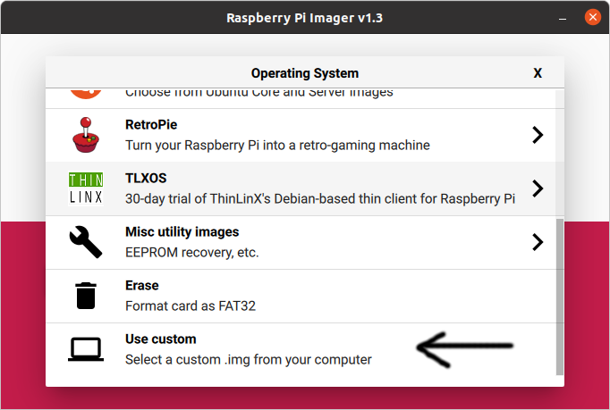
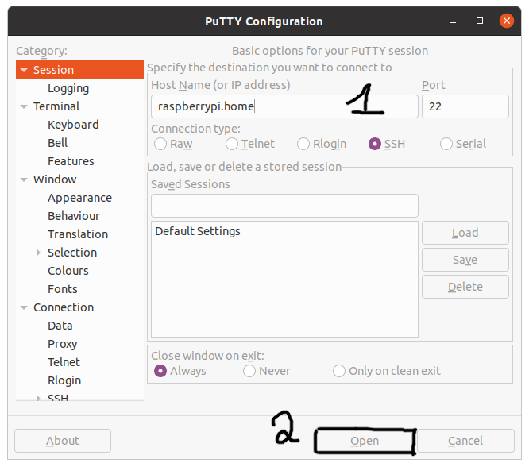
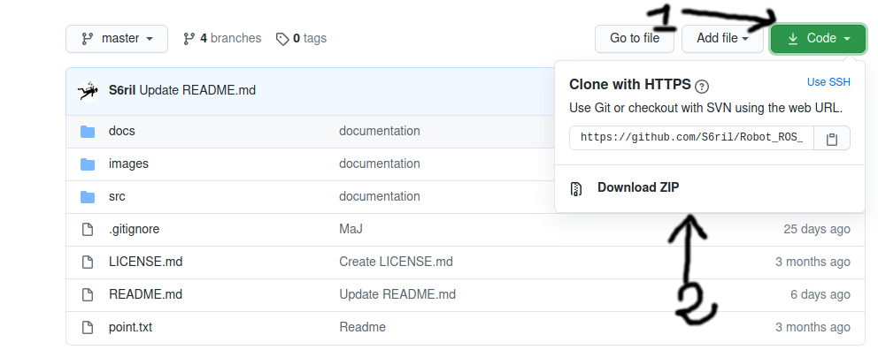

Prérequis & Installation¶
Avertissement
Ce Robot a été développé sous Linux (Ubuntu 20.04 lts) et ROS Noetic. Les commandes dans ce tutoriel seront données pour cet OS. Cependant ROS est un langage disponible sur toutes les plateformes. Les commandes données pour ROS peuvent varier d’une version à l’autre.

Note
Il est possible d’utiliser le code sans ROS et seulement avec le langage Python, car le code est composé de classe. Pour cela sautez l’étape d’installation de ROS et allez directement au téléchargement du code (si Python est installé !!).
Installation d’Ubuntu sur Raspberry PI¶
En installant Ubuntu sur Raspberry Pi, on simplifie l’installation de ROS. Mais l’installation sur la carte est un peu complexe.
Note
Si par malchance vous n’avez pas de réseau local, mais seulement une seule connexion internet, vous pouvez utiliser la Raspberry comme ordinateur en vous connectant dessus avec un clavier, un écran et une connexion internet (wifi, cable). Les commandes seront identiques à une installation sur Ubuntu. Le client ssh Putty ne sera donc pas obligatoire, car il permet seulement d’accéder à distance à la Raspberry.
Requis¶
Ubuntu OS pour Raspberry. Dans mon cas, j’utilise une Raspberry Pi 3b avec 1Go de RAM. Je prends alors la version 32 bits de l’OS.
Raspberry Pi Imager pour installer l’OS sur une carte micro-sd.
Carte micro-sd avec son adaptateur PC.
Putty pour se connecter en ssh. (optionnel voir note ci-dessus).
Installation d’Ubuntu¶
Si vous avez téléchargé Ubuntu server, ouvrez Raspberry Pi Imager sur votre ordinateur et selectionner use custom.

Puis chosissez votre carte et enfin write.
Raspberry Pi imager propose aussi de télécharger l’OS à votre place.
Configuration du wifi après le flash.¶
Note
Par cable ethernet, il n’y a aucune configuration du reseau à faire.
Si vous souhaitez mettre la Raspberry en wifi, il faut modifier dans la partition system-boot le fichier network-config et décommenter (et adapter) les lignes suivantes :
wifis :
wlan0 :
dhcp4 : true
optional : true
access-points :
"home network":
password : "123456789"
Maintenant la Raspberry peut être démarrée. L’os est configuré pour activer automatiquement la connection SSH.
Connexion¶
L’utilisateur et mot de passe par défaut est ubuntu. Il est demandé à la première utilisation de changer le mot de passe.
Si vous étes directement avec un clavier sur la Raspberry¶
Lorsque l’on demande un login, entrez l’identifiant ubuntu et le mot de passe ubuntu.
Attention lorsque vous tapez le mot de passe aucun carractère s’affiche sur l’écran, c’est normal.
Avertissement
Le clavier est sûrement en qwerty !!
Pour changer le clavier en français, je me base sur ce site.
En une ligne, la commande est :
L='fr' && sudo sed -i 's/XKBLAYOUT=\"\w*"/XKBLAYOUT=\"'$L'\"/g' /etc/default/keyboard
Féliciation vous étes connecté à la Raspberry !
Si vous avez un reseau local¶
On se connecte avec Putty sur la raspberry depuis un ordianateur sur le réseau local. La Rapsberry pi n’a pas besoin d’avoir d’écran, ni de clavier connecté. Il faut obligatoirement que les 2 appareils soient connectés sur le même réseau local !!
Dans Putty, remplissez seulement Host Name avec raspberrypi.home. Puis cliquer sur open.

Un terminal de connexion s’affiche alors. Félicitation, vous étes connecté à la Raspberry en ssh !
Il ne manque plus de rentrer l’identifiant ubuntu et le mot de passe ubuntu.
Installation des mises à jours¶
Par habitude, on peut aussi vérifier les mises à jours lors de la première utilisation :
sudo apt update && sudo apt upgrade -y && sudo apt autoremove -y
Problèmes¶
Je ne trouve pas la Raspberry sur mon réseau local¶
Solution 1 : En branchant un écran et un clavier sur la raspberry et en se connectant dessus, vous pouvez vérifier l’adresse ip de la Raspberry :
ifconfig
En fouillant un peu, on peut trouver l’adresse ip de la Raspberry qui est de la forme 192.168.1.12. Entrez ce numéro dans la case Host name de Putty et connectez-vous.
Solution 2 : Si votre téléphone est aussi connecté sur le même réseau local, vous pouvez utiliser l’application Fing. Elle permet de scanner le réseau et de trouver les périphériques connectés.
Installation de ROS sur Ubuntu¶
Maintenant que Ubuntu est installé sur la Raspberry, on peut installer ROS. Le processus est identique pour une installation sur un ordinateur.
Voici un petit résumé du tutorial :
Téléchargement des paquets¶
Je me base sur le tutoriel de ROS pour l’installation sous Ubuntu.
On ajoute le dépot :
sudo sh -c 'echo "deb http://packages.ros.org/ros/ubuntu $(lsb_release -sc) main" > /etc/apt/sources.list.d/ros-latest.list'
sudo apt-key adv --keyserver 'hkp://keyserver.ubuntu.com:80' --recv-key C1CF6E31E6BADE8868B172B4F42ED6FBAB17C654
curl -sSL 'http://keyserver.ubuntu.com/pks/lookup?op=get&search=0xC1CF6E31E6BADE8868B172B4F42ED6FBAB17C654' | sudo apt-key add -
sudo apt update
On a 3 possibilités pour installer ROS :
La version de base :
sudo apt install ros-noetic-desktop
Cette version comporte le minimum d’outils avec une interface graphique pour faire tourner ROS.
Pour Raspberry-Pi sous Ubuntu Server OS, il est possible d’installer une version minimale (sans interface graphique) :
sudo apt install ros-noetic-ros-base
Vous pouvez installer la totalité de ROS avec :
sudo apt install ros-noetic-desktop-full
Après l’installation, on ajoute au terminal l’environnement ROS :
echo "source /opt/ros/noetic/setup.bash" >> ~/.bashrc
source ~/.bashrc
Préparation de l’environnement ROS¶
Je me base sur le tutoriel de ROS.
Il faut dans un premier temps sourcer le terminal (si ce n’est pas déjà fait) :
source /opt/ros/noetic/setup.bash
Puis créer le ROS Workspace :
mkdir -p ~/catkin_ws/src
cd ~/catkin_ws/
catkin_make -DPYTHON_EXECUTABLE=/usr/bin/python3
On impose python 3 pour catkin_make. ROS Noetic est le premier ROS à être seulement basé sur Python3. Pour cette version catkin_make suffit.
On source à nouveau le workspace (pour prendre en compte les modofications) :
source devel/setup.bash
Installation de Python¶
Windows¶
Voici la page de téléchargement de Python.
Il suffit de cliquer sur le bouton télécharger Python et de suivre le programme d’installation.
Linux Debian¶
Sous Linux, si Python n’est pas installé automatiquement :
sudo apt install python3
sudo apt install python3-pip
Téléchargement des codes¶
Une fois les langages installés, il faut récupérer le code de Github.
Sous Windows et Linux¶
On se rend sur le github et il suffit de télécharger le code depuis une archive ZIP.

Puis d’extraire le dossier src qui contient les codes vers l’environnement catkin_ws.
Sous Linux en ligne de commande¶
On ouvre un terminal, puis :
cd ~/
git clone https://github.com/S6ril/Robot_ROS_Valrob.git
mv Robot_ROS_Valrob/src/ ~/catkin_ws/
Cela permet de déplacer les codes vers l’envirronement ROS. C’est bon !! Vous pouvez maintenant compiler le code :
cd ~/catkin_ws
catkin_make
PS : Dans le dossier Robot_ROS_Valrob vous retrouvez cette documentation.
Pour faire de la place (notamment sur Rapsberry-Pi) :
cd ~/
rm -rf Robot_ROS_Valrob
Cela supprime le dossier documentation téléchargé de Github qui se trouve dans le repo.